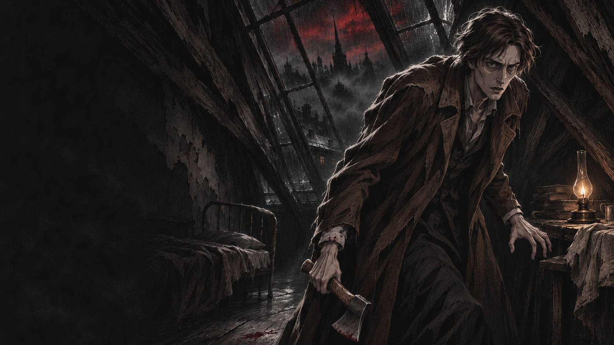
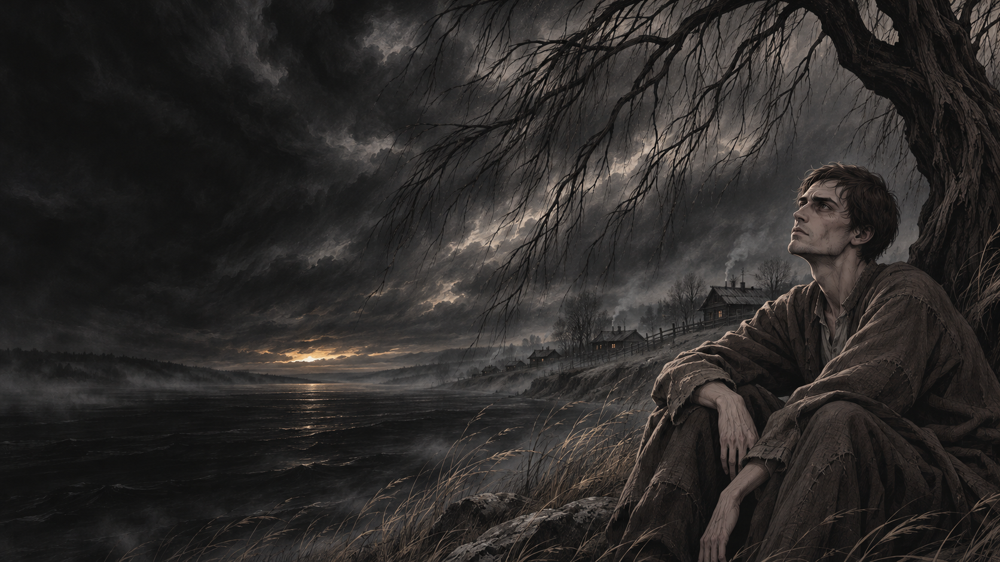

《罪与罚》窗边，念头未散
向下滚动，跟上他的脚步
他写下的，
是人不肯承认的自己。
在陀思妥耶夫斯基的小说里，没有谁只有一种声音。一个人渴望被爱，也会推开向他伸来的手；相信善，却未必有勇气善待眼前的人。
他把这些彼此冲撞的声音留在纸上。让高傲的人低头，让沉默的人开口，也让读到这里的我们，迟迟无法置身事外。
寻找你的第一本书
1866 · 长篇小说
罪与罚
Crime and Punishment
那扇门已经关上。
他却再也无法独处。
拉斯克尔尼科夫曾以为，一个足够伟大的理由可以抵消罪行。此后，每一次敲门、每一个陌生的眼神，都像在问他：你真的相信吗？
作品集
有人在等待爱情，有人在审判自己。 你愿意先听谁说话？
点击卡牌，在下方展开简介、人物与阅读线索。导读为本站原创整理，非原著引文。
总有一个人，
替你说出沉默。
不必从最厚的一本开始。带上此刻的心事，让故事先与你相遇。

推开门，走近他。
从角色的内心，走到作者的面前。